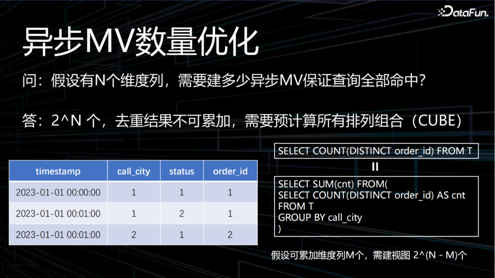
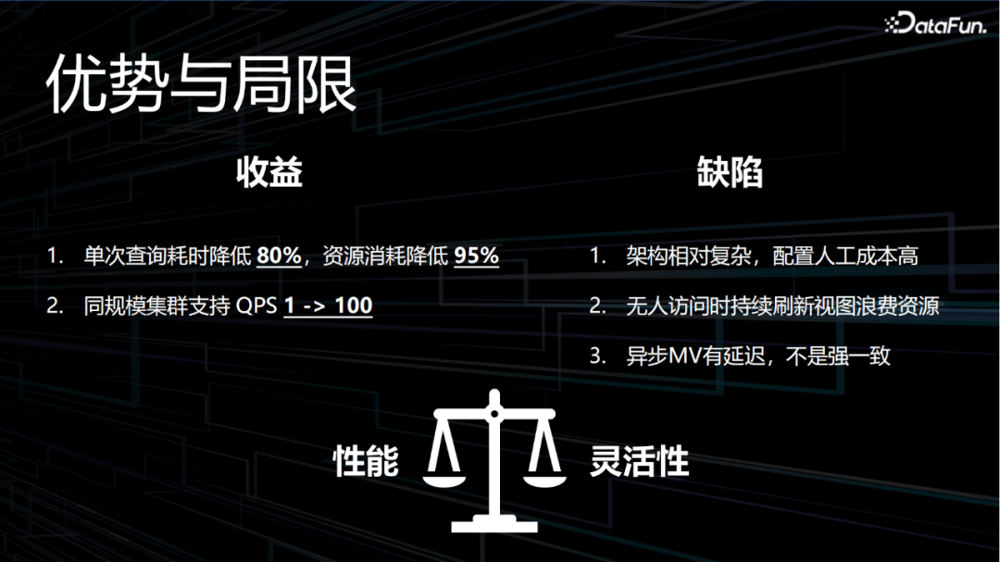

导读本次分享题目为StarRocks物化视图在滴滴的实践，由来自滴滴出行的资深开发工程师刘雨飞老师带来经验分享。
1. 背景介绍：滴滴OLAP的发展历程及最终为什么选择StarRocks2. 视图加速实时看板：StarRocks项目物化视图应用分享背景介绍：滴滴OLAP的发展历程及最终为什么选择StarRocks
滴滴的OLAP系统，早期是基于Druid的实时监控系统，2017年基于Kylin的离线查询加速应用逐步起步，到2018年后开始全面发展，Druid、Kylin及Presto并存，用于承接实时监控、实时看版、数据分析等场景。随着业务的使用量和复杂度的提升，原有的引擎在性能、稳定性、易用性、及维护成本等多方面，都无法满足复杂的业务应用要求。在2020年前后，滴滴引入了当时业界广泛使用的ClickHouse引擎，作为开源的OLAP，采用列式存储模式，号称比MySQL快1000倍，最大的特色在于向量化的计算引擎，单机性能很强悍。滴滴基于ClickHouse支持了当时的网约车、两轮车、顺风车、橙心优选等多个业务线的实时运营看板、实时分析等场景。经过1年多的发展迭代，ClickHouse和Druid成为了滴滴内部主要的OLAP引擎，也让OLAP在滴滴内部逐步发展起来。
公司内部，OLAP的使用场景越来越复杂，包括监控报表、日志分析、离线加速、实时数仓等场景。随着用户需求的持续增加，对查询的性能要求也越来越高，基于ClickHouse和Druid的OLAP引擎面临着以下问题：其一，维护困难。针对OLAP场景，滴滴维护的引擎超过5个，包括Druid、ClickHouse、Kylin、Presto等，每个引擎的使用方法、运维手段差异大，导致运维压力巨大，后续发展遇到瓶颈。其二，使用不便。每种OLAP引擎的特点都不一样，如Druid是时序数据库、ClickHouse是计算能力强、但Join关联计算能力较差，各个引擎针对的场景都比较单一，用户难以根据业务场景来正确选择合适的引擎。ClickHouse从能用到好用差异巨大，运维难度大，需要投入大量的人力保障才能做到好用。其三，用户场景需求难以满足。比如，很多用户有修改、删除数据的要求，当时的ClickHouse、Druid都不支持；以及，对于高QPS的场景、复杂查询、Join等，当时的OLAP系统也无法满足用户需求。其四，稳定性压力大。维护的引擎多，人员相对有限，经常出现稳定性故障；同时多业务运行在同一套集群环境中，缺少相应集群级别的资源隔离机制，服务稳定性难以保障。针对实用中遇到的问题，2022年前后，滴滴引入了StarRocks引擎——StarRocks是一个全新一代的、全场景的、MPP数据库；StarRocks使用了向量化、PipeLine引擎、CBO、智能的物化视图等功能；StarRocks可支持实时更新的历史数据存储，实现性能强悍的主键模型存储，实现了多维、实时、高并发的数据分析。StarRocks在开源社区里也非常活跃，增长速度不亚于ClickHouse在前期的发展。目前在各大互联网公司都有广泛的应用。StarRocks有几大特点：首先，简洁的分布式架构。没有外部组件的依赖，有FE、BE两种角色，可以实现数据的水平扩展，支持数据自动均衡处理（ClickHouse需要手动同步处理），将数据分片存储在不同的切片上，实现并行处理和查询。其次，查询性能表现比较强，StraRocks使用了列式存储，支持向量化的引擎，实现了数据的并行处理和查询，对于聚合或Join查询，相较于ClickHouse也提升显著。再次，由于架构的原因，StarRocks引擎在QPS方面的表现，也更优于其他引擎。StarRocks还支持了灵活的数据模型——支持多种表结构，如明细模型、聚合模型、主键模型等；支持多种数据类型，如需要去重的Hyperloglog、BITMAP等等类型，可以适用于多种数据分析场景。第四，易于使用和管理。StarRocks自身提供了比较简洁的管理页面和命令行工具，可以基于集群的角色，对系统进行上限、下限的扩容等。所有的数据均衡、同步、容灾等，都是在内部自动完成的，基本不需要人工的参与。第五，StarRocks支持统一的湖仓架构。原生就支持的统一管理、数据湖、自身存储可以支持联邦查询、将Hive、Iceberg、Hudi等，按照外表直接挂在StarRocks上，提供统一的查询服务。可以将StarRocks中的实时数据、离线维度数据进行实时关联，免去中间数据同步的时间开销，通过一套技术方案，解决实时数据湖仓分析。从引入StarRocks到现在（截止2023年5月），滴滴已有StarRocks集群超过30个，数据量超过300TB，每日查询量超过400W+，数据表超过1500张。支持了滴滴几乎所有的业务线，如网约车、单车、能源、货运等等。在平台建设方面，主要打通的数据链路的上下游生态，包括离线/实时的导入——离线导入采用了StarRocks的SparkLoad、实时导入采用Flink的StarRocks Connector导入。也支持基于页面配置的自动化导入工具，用户不需要编写任务，就可以完成简单的数据同步。滴滴还建设了云原生的运维管控平台，提供高效的运维管理工具和业务交付的能力——支持从业务申请创建一个新的集群，到交付给业务可用的集群，只需要1小时。在引擎建设方面，通过容器化、资源隔离和双链路等机制，对不同稳定性要求的用户提供针对性的保障手段——目前支持独立的物理机群、独立的容器集群、以及混部在一起的公共集群共存，支持通过不同的成本，来满足用户使用的稳定性要求。在易用性上，将慢查询的监测告警功能、查询分析细分功能开放给用户，让用户有办法感受到慢查询，从而开展针对性的调优。在性能方面，目前也在重点大力的推广物化视图能力，通过预处理的能力，为用户提供更好的性能和更低成本的服务。
02
视图加速实时看板：StarRocks项目物化视图应用分享
第二部分，详细介绍基于StarRocks的物化视图对业务监控看板进行加速优化。网约车的实时看版，是滴滴最核心的业务监控看板，包括实时的呼叫数、冒泡数、还有实时的GMV等超过20多个业务指标，支持业务、数据和运营人员，通过看板数据变化，进行业务趋势及同环比的监测，发现业务过程问题；支持根据实时的变化趋势，来调整运营策略，从而影响线上行为。旧版的实时看版基于Druid进行配置，使用模糊去重方式进行指标计算，有一定的计算误差。在大促期间，同时访问的用户数非常多，查询并发过高，会导致集群负载过高，从而引出稳定性问题。在引入StarRocks之后，希望通过新的技术来对数据加工链路进行重构，解决指标的准确性和稳定性等应用问题。第一，有大量精确去重的指标计算。高精度基数的精确去重，一直是OLAP的技术难点，应对每天上亿规模明细数据的count(distinct())计算，对计算资源消耗是个大挑战。第二，筛选的维度比较灵活。在看板查询的基础上，提供多筛选条件，即表的维度字段设置过滤条件筛选，包括时间、城市、业务线等超过十个维度的字段组合，达到日均千万级维度组合应用场景。第三，查询并发高。在大促期间，所有的数据开发、业务运营用户都会进行盯盘，关注业务瞬时变化趋势，高峰时期有数百上千规模的用户并发访问。每分钟都会进行指标数据刷新，每次刷新都会触发大几十次的查询计算，高峰时期有数百个查询QPS，对集群的负载要求非常高。若直接使用原始的明细数据进行计算，将消耗巨量的计算资源，成本是无法接受的。课题：探索一个技术方案，在可接受的成本基础上，达成业务应用场景目标。结合业务特点，基于StarRocks的物化视图能力，对整个看板场景链路进行加速优化设计。最上游数据来自数仓，对线上日志、binlog清洗和Join处理后，加入消息队列中，通过Flink同步到StarRocks；在StarRocks内部先做一次全局字典转换，将需要去重的指标列，把String映射转化为BIGINT，为后续使用BITMAP类型进行上卷计算。继而在StarRocks内部进行数据建模，落地原始明细表，生成ODS层-StarRocks明细模型层；再加工DWD层-StarRocks中的同步物化视图，对不同的维度组合进行上卷，支持增量计算，时效性较高，数据满足强一致，存储类型使用BITMAP的中间计算结果。对单次明细查询具有明显的提升，但是查询并发还是无法满足应用要求；继而加工ADS层-StarRocks中的异步物化视图进行加速，StarRocks的异步物化视图使用定时刷新机制，时效性相对会差一些，数据相对底表有一定的更新延迟，查询底表和异步物化视图可能会存在一定的差异，但因为异步视图存储的是最终计算结果，查询速度极快。可以理解为查询缓存的持久化。经过分析业务的历史查询模式，可以将最高频的查询定义为异步视图；同步视图可以降低异步视图在定时刷新计算时的资源开销；部分无法命中异步视图的查询，也可以通过同步视图进行加速；对于剩余的小部分低频查询，会使用原始的明细数据表进行计算。通常在需要对count(distinct())指标做上卷计算时，StarRocks支持Hyper-loglog和BITMAP两种类型。Hyper-loglog类型是一种模糊去重的指标计算模式，对于精确去重的指标需要使用BITMAP类型。StarRocks内部使用的是Roaring BITMAP实现，字段类型要求是在UINT64以内，而且在数据的连续性比较好的情况下，性能表现更优。若数据是连续递增的，相比完全随机的ID，性能差异在百倍以上。所以，滴滴在StarRocks中实现了高基数全局字典的功能。第一步：全局字典表的数据使用StarRocks内部的带自增ID列的主键表进行存储。表的主键使用的是需要去重的字段，ID列就是自增ID的列，数据在写入时生成连续递增的数字，写入时使用了StarRocks的一个partial_update部分列更新的功能，保证了写入幂等。只有在初次写入时生成自增ID列，之后相同的批重新写入，不会对ID的结果进行更新。确保数据可以无限次的重复写入。第二步：实现了字典映射的函数dict_mapping，入参为字典表表名、主键值，在计算时，实时查询字典表，并返回生成的ID列的值。使用StarRocks的主键索引进行加速，相比于基于SCAN进行扫描，性能提升非常明显。第三步：改造了Flink的flink-starrocks-connector函数，写入时分两次写入：首先，写入字典表，抽取需要写入字典表的列，确保数据写入落盘，事务提交可见。之后，再写入实时数据表，StarRocks支持写入时设置参数、使用函数进行预处理，对数据进行预加工。使用第二步的字典映射函数dict_mapping，通过映射对需要去重的字段进行重新映射，将原有的string类型，映射为字典表中ID列的值。在数据全部落盘之后，需要设计异步视图如何创建？
以简化后的订单表为例进行介绍：订单表中包括分区日期、数据时间、呼叫城市、渠道、业务线等维度字段信息，以及需要去重的字段业务订单ID。如左下图示视图，利用time_slice函数将时间取整为5分钟，按5分钟区间粒度进行数据聚合，聚合维度包括呼叫城市、渠道等可累加维度。当用户查询5分钟粒度，且筛选条件和视图中聚合维度完全相同时，可以使用这张视图表进行查询加速，而不需要去查询底表明细数据。
重复上述操作，可以设置1分钟、10分钟、30分钟等不同的区间聚合粒度，按照不同的维度列组合，可以创建出多张异步视图，来满足不同用户、不同维度的组合查询条件，完成对应实时看版的加速效果。
在上述过程中，到底需要创建多少张异步视图，才能满足所有查询都可以命中？以订单表中包含N个维度列为例，因为count(distinct())结果是不支持累加的，需要完成所有维度字段的排列组合（既2的N次方个视图），才能满足所有查询命中视图加速。即，如果有10个维度列，就需要有超过1000张视图，这个成本是不能接受的。我们结合表数据特点，对异步视图的表数量进行优化。前面提到了可累加维度和不可累加维度概念，如一个订单只能有一个呼叫城市，呼叫城市维度就是可累加维度。如果要进行全国累计呼叫次数计算，就可以通过所有城市的呼叫次数进行累加实现。这样就可以复用基于城市的物化视图，避免冗余建设全国维度的物化视图。反向的，订单状态是不可累加维度，每个订单会在多个状态之间流转，不支持累加计算。如果数据表中可累加的维度列有M个，那么异步物化视图需要2的（N-M）次方个。
如何使用异步视图的透明加速能力来简化使用成本？
StarRocks的整条数据加工链路上，除了底表明细表、还有多张异步视图、同步视图等，使用方需要确定本次查询需要使用哪张表，对用户而言操作比较复杂。StarRocks提供了视图的透明加速功能。将查询与这张表关联的所有视图进行对比，将查询自动改写到符合条件的视图上，保证改写前后的语义查询结果相同，查询性能一致的。从而保障在不改变查询SQL的情况下，使用视图对查询进行加速。
示例如下：查询Demo见左下方，在SQL中，内层的子查询使用了按5分钟进行聚合，聚合维度包括所有可累加维度——日期分区、数据日期、呼叫城市、渠道等4维度字段，在外层再多数据进行求和。
基于StarRocks的底表上，建立了3张异步视图，视图1包括了1分钟聚合粒度，分区、日期、呼叫城市、渠道等可累加维度；视图2同视图1，将聚合粒度调整为5分钟；视图3集成视图2的基础上，增加业务线可累加维度。
从而产生了如下四种查询条件：
Case 1: Where 为空，命中MV1
Case 2: Where city IN(...)命中MV2
Case 3：Where product_line=?，命中MV3
Case 4：Where Product_line IN（），多业务线查询，不支持累加，不能命中MV3，如果有创建同步视图的话，可以进行上卷加速。
03
总结与规划：进一步提升的空间和发展方向
设计方案的核心在于做取舍，方案的成果关键在于综合性能的提升。
单次查询耗时降低80%，资源消耗降低95%；
同规模集群支持QPS提升百倍。
缺点也很明显，如下：
对于看板类查询，并发极高，但查询模式比较固定。大部分的查询是类似的，甚至重复的，整体方案的思路在于牺牲一定的灵活性，保障查询性能达到极致提升。

- 首先，BITMAP的计算性能提升。尝试修改StarRocks的BITMAP分桶策略、BITMAP的Range进行分桶，在不需要对BITMAP的中间结果进行shuffle情况下，就可以获取到最终结果。使用BITMAP的fastunion函数对大量BITMAP的合并速度进行提升。
- 其次，异步视图在改写计算环节资源消耗还是比较大。同底表相关的所有视图进行对比，包括分区数据一致性、版本是否一致等等方面，还存在较大的提升空间。例如1s的查询，有500ms都消耗在SQL优化器上。
- 最后，在易用性上进行提升。由于看板查询都是基于平台配置，自动生成的查询SQL，因而通过分析历史查询记录，提取高频查询，进行物化视图自动创建，降低人工参与，才能更有利于实现技术的更大规模应用和推广。
如果这个文章对你有帮助，不要忘记 「在看」 「点赞」 「收藏」 三连啊喂！